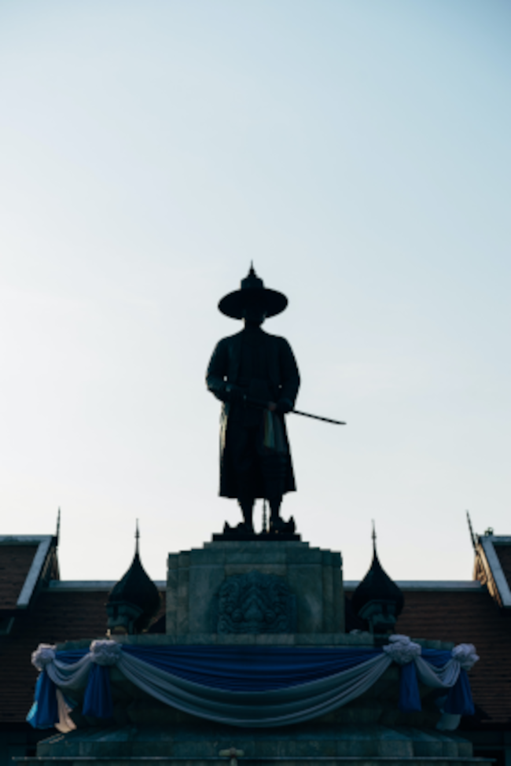

"O jeito samurai pode mudar sua vida, não importa como: família, dinheiro, lutar, viver ou como morrer. Ter honra é caro, mas ser honrado é o melhor que você pode ser... e outros não. O universo conspira para os honrados, os bravos e os humildes. Sua espada deve proteger os fracos, suas palavras devem ser retas e sua vida deve ser um exemplo para aqueles ao seu redor. Você é o que você faz, nunca se esqueça disso.
Do pó viemos, ao pó todos retornaremos, mas sua missão neste mundo é ser a luz contra as ondas das trevas, enquanto você ainda respirar... e inspirar aqueles que o seguem no caminho da sabedoria e guerra justa. Os sábios lideram o caminho.
A tarefa nunca será fácil, e nunca se supunha que fosse. O ouro é separado da impureza no calor do fogo; assim, seu descanso virá logo após a longa luta árdua e tempos de provação. O fim da jornada é o verdadeiro grande prêmio! Mas nada, nada vale se você não foi honrado. Um tirano pode ser rico, mas nunca um homem honrado; um traidor pode ser famoso, mas nunca reconhecido por suas palavras verdadeiras. Nós, samurais, nascemos para servir e também escolhemos a espada: todos vivemos e morremos, pelo mesmo código.
Não tema o mal, você nunca está sozinho. As forças do universo estão com você, desde que você use sua espada contra o inimigo certo - e sempre, sempre, ataque com força!"
